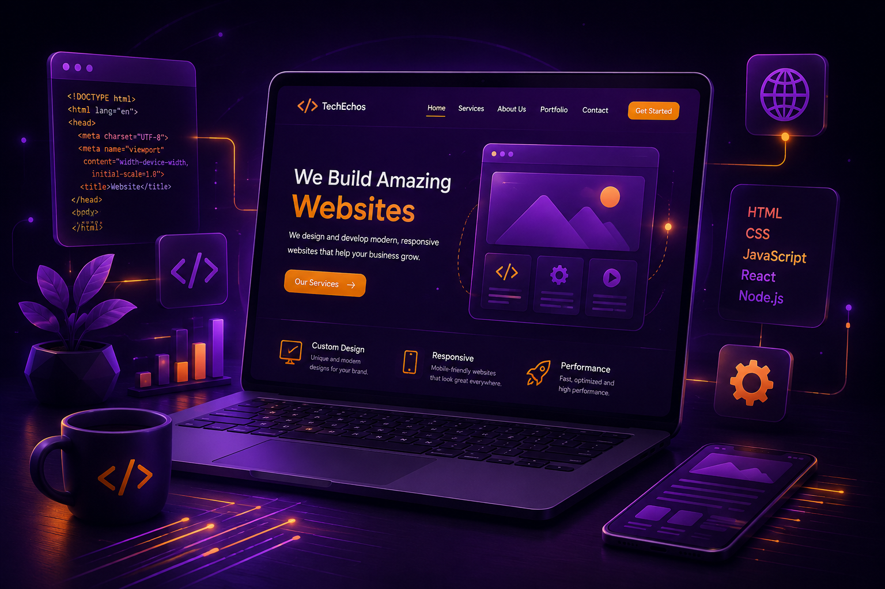
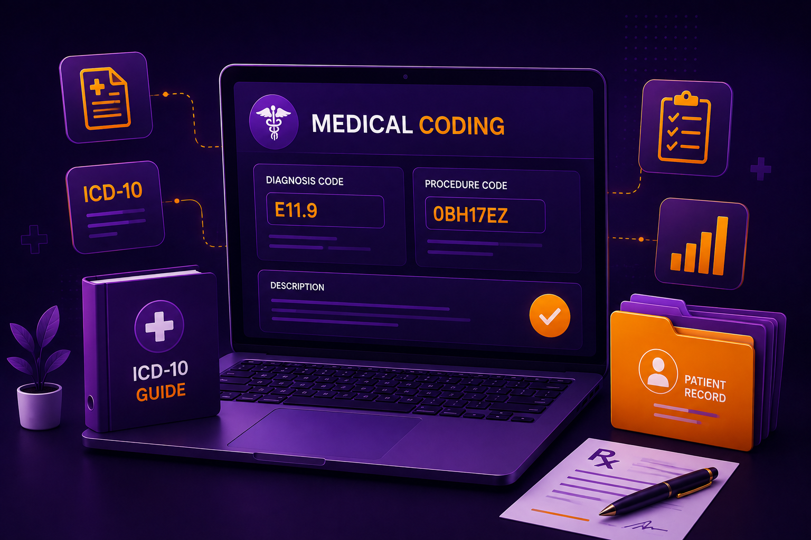

Web Development
High-performance websites built for your business.
ResponsiveSEOSecure
Explore Service
From intelligent automation to scalable software ecosystems, we craft innovative solutions that empower businesses to lead confidently in the digital era.
We deliver innovative solutions that help businesses grow, streamline operations, and create exceptional digital experiences.

High-performance websites built for your business.
Scalable Android and iOS applications with seamless user experiences.

Comprehensive QA and testing solutions to ensure quality and reliability.
24/7 expert technical assistance to keep your systems running smoothly.

Accurate and efficient coding services that support healthcare operations.

Professional digital publishing and conversion services for modern readers.
We transform fragmented workflows, delivery delays, and technical uncertainty into structured and scalable service experiences.
Connected systems and simpler operations.
Usable journeys shaped for real users.
Instead of treating service delivery as isolated work, we connect structure, execution, quality checks, and post-launch continuity into one experience that is easier to trust and scale.
Scalable foundations planned for growth and performance.
Our service model goes beyond code delivery. We combine planning, design, development, testing, launch support, and refinement into one structured delivery experience.
From requirement understanding to final deployment, every phase is planned to reduce friction, improve collaboration, and deliver solutions that are easier to scale and maintain.
Structured technical planning, feature mapping, and scalable system thinking aligned with your business goals.
Clear digital experiences built with usability, consistency, responsiveness, and visual quality in mind.
Good service scope should define deliverables, timelines, standards, and exclusions clearly to avoid confusion and scope creep.
Defined deliverables, milestones, and responsibilities.
Testing and review to improve confidence before launch.
Practical guidance during release and early rollout.
Built with maintainability and long-term growth in mind.
Every project follows a clear path shaped around discovery, planning, execution, review, and post-launch continuity.
We identify your goals, technical priorities, and business expectations before the execution path is defined.
Scope, timeline, architecture, and priorities are aligned into a practical plan for steady execution.
Interfaces and technical layers are created with a focus on usability, performance, and maintainability.
Functional review, responsiveness checks, and quality validation ensure stable and polished delivery.
Post-launch guidance, issue handling, and refinements help the solution continue performing smoothly.
We focus on results that reflect service quality, technical stability, business continuity, and long-term client confidence.
Strong service pages often use quantified or clearly stated outcomes to support trust, especially when the metrics are directly connected to the promise being made.
Use only real numbers here. If exact client data is not available, replace these with verified averages, timeframe-based outcomes, or proof statements from actual delivery work.
We present outcomes that connect directly to business impact, helping clients understand how our work improves continuity, reduces friction, and supports smoother digital operations over time.
Stable delivery environments and reduced operational disruption.
Improved efficiency through structured delivery and automation support.
Ongoing support availability for post-launch continuity and issue handling.
Reflects sustained confidence, repeat collaboration, and service value.